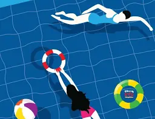

Experiences


I'm 20 years old. Now I'm studying for my bachelor's degree here in the school of Robot and computer at Bangkok university.
In my free time, I love to travel and spend my free time with my family and friends. I always have a trip with them in my free time on the weekend. I also love listening to music. My favourite type of music is pop. I love this hobby so much because listen to music makes me feel not alone when I’m alone and also makes me learn more English by get to know new vocab and help me to improve my English accent.

NOEY TANWARAT

NOEYTWR
Tanwas.17@gmail.com

061509XXXX